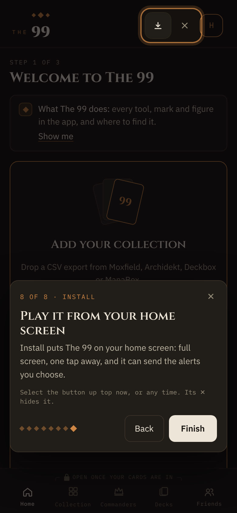
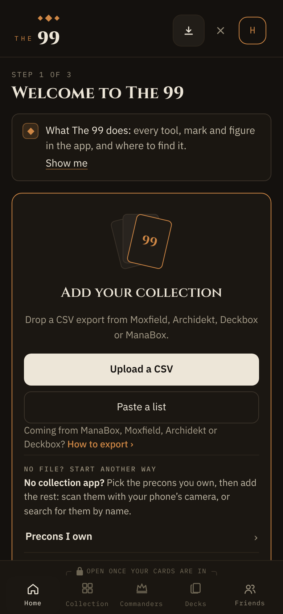
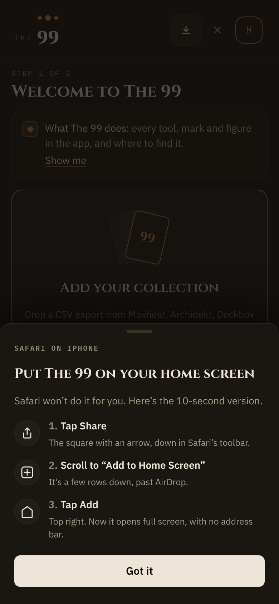

R1b, after your note: no new row. The first-run tour gets one more stop, the last, on phones. It lights the header's shipped Install button and says why to use it. Select that button and you get the shipped how-to sheet. Every frame is the shipped components rendered with the shipped CSS (Low Sun). The tour card is TourRun's own markup. Copy is DRAFT for /copy-review.

8 of 8 · Install (7 of 7 when there's no Credits stop). The cutout and ring are the slot treatment (5px room, 14 corner) around the whole shipped slot: Install and its ✕. Title Play it from your home screen. Only Safari's body mentions alerts. The foot says the button stays and its ✕ hides it. Back and Finish as shipped. On this stop the lit button can be selected: that ends the tour and does the button's own press.

Nothing new is left behind. The tour closes and the shipped header button stays where the player just saw it, under its shipped rules (✕ = quiet 30 days, a second ✕ retires it). No row, banner or toast.

The shipped sheet, unchanged (IosInstallSheet, Safari's step 1), from the lit button on the stop or from the header any time after.